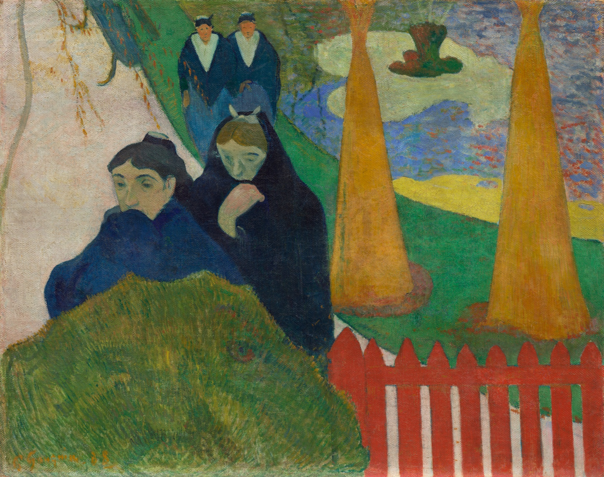

阿尔勒的女人（密史脱拉风） Arlésiennes (Mistral)
高更 · 1888年 · 芝加哥艺术博物馆
Paul Gauguin · 1888 · Art Institute of Chicago
图片：芝加哥艺术博物馆，CC0 / Image: Art Institute of Chicago, CC0

发现 · Discover
黄房子对面 Across from the Yellow House
这是梵高住的黄房子正对面的公园。
This is the public garden directly across from Van Gogh's Yellow House.
披着披肩的女人 Women in shawls
几位阿尔勒的妇女披着深色的披肩，低着头走过。
Several women of Arles walk past, wrapped in dark shawls, heads bowed.
红色的栅栏 The red fence
她们身边是一道鲜红色的栅栏。
Beside them runs a bright red fence.
密史脱拉风 The mistral
画名里的“密史脱拉”，是法国南部一种又冷又强的风。
The “mistral” in the title is the strong, cold wind of southern France.
平平的颜色 Flat colour
高更用大块平平的颜色作画，几乎看不出远近。他的构图经过精心安排，和梵高的即兴完全不同。
Gauguin painted in large areas of flat colour, with almost no sense of depth. His composition is carefully planned, quite unlike Van Gogh's spontaneity.
十七幅画 Seventeen canvases
高更在阿尔勒和梵高同住的两个月里，一共画了17幅画，这是其中之一。
In the two months he lived with Van Gogh in Arles, Gauguin completed 17 canvases. This is one of them.
故事 · The story
ACT I 第一幕 · 高更来了 Gauguin arrives
1888年秋天，梵高等了很久的高更终于来到阿尔勒，住进了黄房子。
In autumn 1888, after Van Gogh had waited so long, Gauguin finally arrived in Arles and moved into the Yellow House.
1888年 · 芝加哥艺术博物馆 / 1888 · Art Institute of Chicago
ACT II 第二幕 · 同一座花园 The same garden
黄房子对面有一座公园。高更画下了它，梵高也画过它。两人看的是同一座花园，画出来却完全不一样。
Across from the Yellow House was a public garden. Gauguin painted it, and so did Van Gogh. They looked at the same garden, but painted it in completely different ways.
1888年 · 芝加哥艺术博物馆 / 1888 · Art Institute of Chicago
ACT III 第三幕 · 来到芝加哥 To Chicago
1934年，芝加哥艺术博物馆买下了这幅画。今天，它和梵高、修拉、莫奈的许多作品一起，收藏在芝加哥。
In 1934, the Art Institute of Chicago acquired this painting. Today it is in Chicago, alongside many works by Van Gogh, Seurat and Monet.
1888年 · 芝加哥艺术博物馆 / 1888 · Art Institute of Chicago
同一座花园，两位画家。 One garden, two painters.
作品档案 · Artwork record
| 画家（生卒年） · Artist (dates) | 保罗·高更（1848–1903） / Paul Gauguin (1848–1903) |
|---|---|
| 画名 · Title | 阿尔勒的女人（密史脱拉风） / Arlésiennes (Mistral) |
| 年份 · Date | 1888年 / 1888 |
| 材质 · Medium | 黄麻布上油画 / Oil on jute |
| 尺寸 · Dimensions | 73 × 92 cm |
| 收藏地 · Collection | 芝加哥艺术博物馆（科伯恩夫妇纪念收藏；编号 1934.391） / Art Institute of Chicago (Mr. and Mrs. Lewis Larned Coburn Memorial Collection; 1934.391) |
关于画家 · About the artist
保罗·高更（1848–1903），法国画家。他曾在巴黎做股票经纪人，后来专职画画。1888年秋天，他来到阿尔勒，和梵高在黄房子同住了大约两个月。后来，他去了塔希提。
Paul Gauguin (1848–1903) was a French painter. He worked as a stockbroker in Paris before devoting himself to painting. In autumn 1888 he came to Arles and lived with Van Gogh in the Yellow House for about two months. He later went to Tahiti.